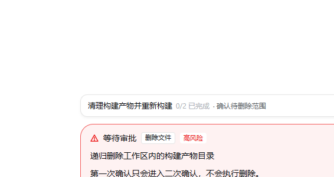

MANUAL · 第 4 章
聊天、Agent 与一轮任务
发出去之后会发生什么、什么时候需要你点确认、停下来之后还剩下什么。
先选模式
输入框左下有两个常驻分段：闲聊（可读取文件，不修改）与 Agent（可执行受控工具）。切换作用于当前会话，从下一轮生效，草稿、历史与地图分支都保留， 不会新建会话。运行中、等待审批或结果待核对时不能切换。
发一条消息
- 默认 Enter 发送、Shift+Enter 换行；也可以在「设置 → 通用与外观 → 发送快捷键」改成 Ctrl / ⌘ + Enter。
- 图片可以直接粘贴，或点输入框右下角的图片按钮选择。支持 PNG / JPEG / GIF / WebP，按文件内容识别，不看扩展名。
- 只贴一张图、不写字也可以发送。图片会随消息一起交给模型，但只有勾了「这条连接支持图片输入」的连接才会真正看到图。
一轮正在跑的时候
- 草稿可以继续写，但发不出去——页面会提示「任务进行中：可以先继续写草稿，但要等这一轮结束才能发送。」
- 点「停止生成」可以中断本轮：已完成工具不会回滚，已产生的部分回答保留，并标上「已停止」。
- 停止请求失败时会出现可关闭的提示，可以刷新状态后重试；不要靠重复提交来「顶掉」上一轮，同一会话的第二个提交会被拒绝。
审批卡怎么回
删除、覆盖已有文件、已识别的破坏性 Shell、大范围编辑，以及工作区外的写入，都会停在你的批准之前。 普通审批的出口是「允许一次」或「拒绝」；高风险删除会先进入二次确认，还要再勾一次才会执行。

- 批准只对这次调用生效，不会加入免审名单。
- 被拒绝的动作不会执行，本轮会带着这个结论继续。
- 等待审批时切到其他会话不会批准或取消它，任务仍然绑定原会话。
结果不确定时怎么收尾
工具或持久化异常导致结果不可确认时，页面会写：「本轮执行已中断，工具执行结果需要核对。刷新不会重跑工具。」 这时的正确做法是：
- 刷新会话，查看本轮记录与实际文件 / 命令结果；
- 勾选「我已查看本轮记录并核对相关文件或命令结果」；
- 点「结束中断任务」。
这个操作不会重跑工具，也不会撤销已经执行的操作。如果提交结果本身无法确认，页面还会提示先刷新核对， 并明确建议不要直接重复执行可能带副作用的操作。
一轮结束后
对话按轮展示模型实际返回的 Think、工具、计划、检索 / 记忆、审批与用量。隐藏或没有返回的推理不会被补造； 「未流式」「已停止」这类状态会作为中性标注留在输入区附近，不当作错误。
最后更新 2026-10-27 · 适用版本 v1.0